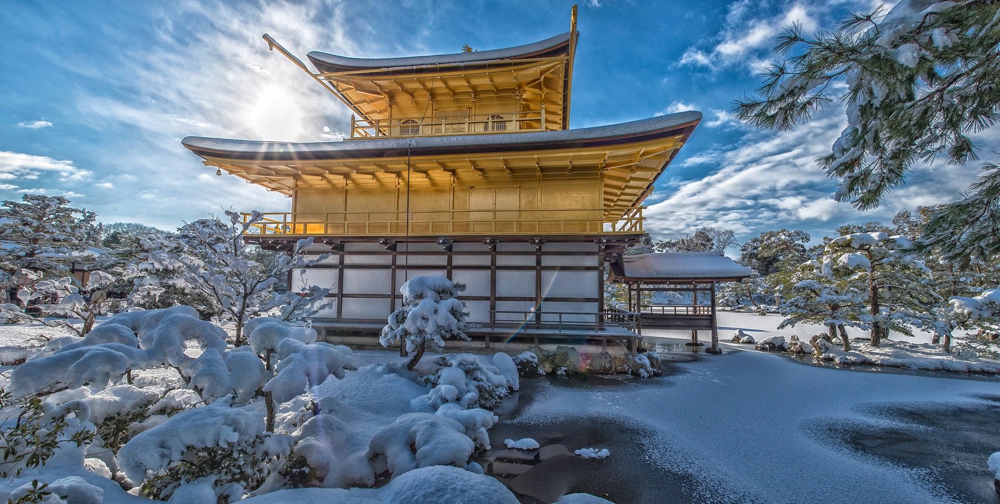
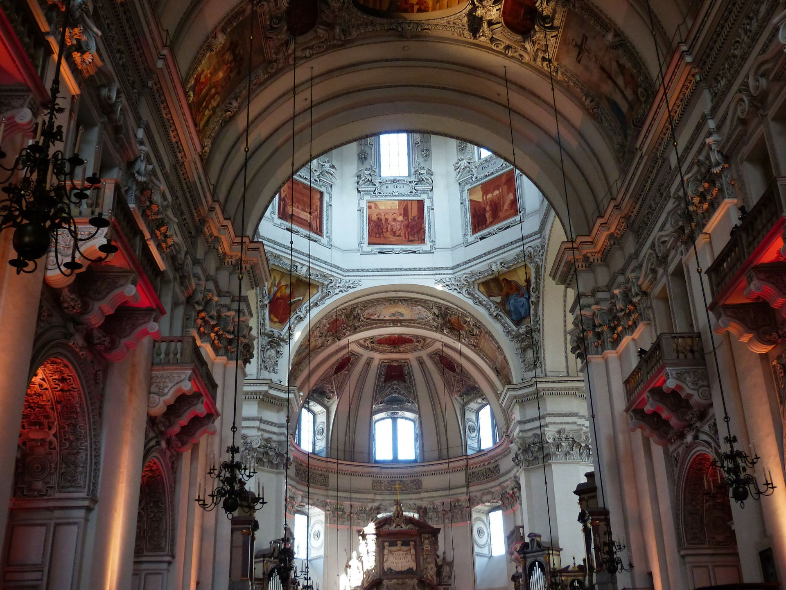
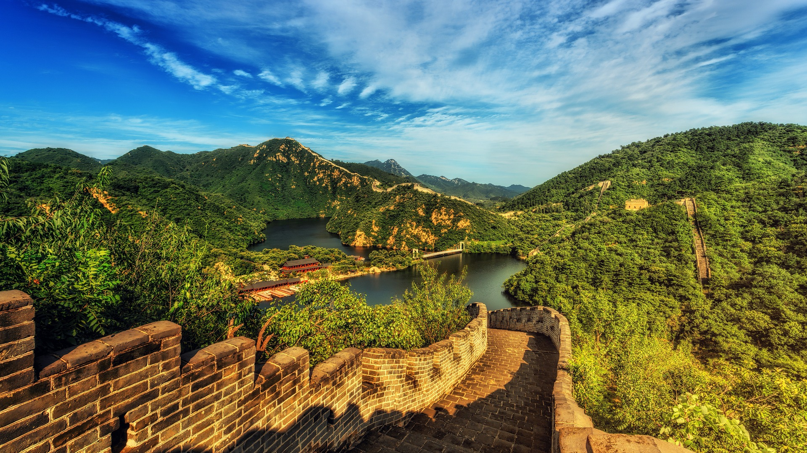

金閣寺

金閣寺は1397年に室町幕府の３代征夷代将軍の一人である足利義満によって建てられました
金閣寺の正式名称は鹿苑寺といい、舎利殿金閣が特に有名であるため、金閣寺と呼ばれるようになりました
私たちが思い浮かべる金色の建物（金閣）は舎利殿で、これを含めた全体を金閣寺と呼んでいます
金閣寺の構造は階層ごとに違いが見られ、二層・三層は漆の上から純金の箔が貼られています
鏡湖池は金閣の前に広がっており、風が無く良く晴れた日には
金閣前の鏡湖地に写る逆さ金閣を見ることができるのも金閣寺の魅力の一つです
逆さ金閣は鏡湖池に波が無い時に一番はっきり見えるので、もし可能であれば
無風の日を選んで訪れると感動的な光景を見ることができます
※舎利殿とは、仏舎利を安置した建物で一般的に中央に舎利塔を配置します
エッフェル塔

エッフェル塔はフランス革命100周年にあたる1889年の第4回パリ万開催時に、エッフェル社社長
ギュスターヴ・エッフェルによって建てられました
レースをまとった優美な姿から「鉄の貴婦人」と呼ばれており、
年間700万人が訪れるフランス髄一の観光名所になっています
また、高さ324mあるエッフェル塔は「最も高い鉄の構造物」としてギネス認定されています
※ギュスターヴ・エッフェルは1823年に生まれ、鉄の構造の専門家と仕事をしてフランスや世界に大きな影響を与えました
最初はボルドーにある長さ500ｍある鉄橋を作り、大成功を修めました
その後、自分の会社を立ち上げ様々な橋や鉄構造の建物の建設に努めることになりました
フランスがアメリカにプレゼントした自由の女神の制作にも参加していました
今では1889年に建設したエッフェル塔をはじめフランスのニース・オルレアン・パリ・ボルドー、
外国ではベトナム・アルジェリア・ポルトガル・ボリビア・メキシコ・ハンガリー・ペルーなど世界中に存在します
ザイツブルク大聖堂

ザルツブルク大聖堂はヨーロッパ有数の美しさを誇る教会。8世紀に建造され、
ザルツブルクで最も重要な歴史的建造物の1つです
この聖堂の特徴の1つはドームです。旧約聖書に登場する場面を描いた2列のフレスコ画を
手掛けたのはフィレンツェの画家ドナート・マスカーニで、彼の作品はこれ以外にも身廊にいくつか飾られています
正門の脇には 2 人の守護聖人、聖ルペルトと聖ヴィジルと十二使徒の聖ペテロと聖パウロの像が建っています
※ザルツブルクは、オーストリア中北部の都市で同盟のザルツブルク週の州都です
※ドナート・マスカーニは、フィレンツェ・ヴォルテッラ・ローマ・ムジェッロ・ザルツブルクで活躍したイタリア人の画家で
Jacopp Ligozzの弟子でした
万里の長城

中華人民共和国（中国）に存在する城壁の遺跡です
匈奴のような北方の異民族が浸政してくるのを迎撃するために、泰代の紀元前214年に始皇帝によって建設された
一般的には始皇帝によって作られたと考えられているが、実際はその後いくつかの王朝によって
修築と移転が繰り返され、現存の大部分は明代に作られたものです
現存する人工壁（万里の長城）の長さは21.196kmもありユネスコの世界遺産
（文化遺産）に登録された
※中華人民共和国は、東アジアに位置する社会主義共和制国家の国で人口は14.02億人（2020年）です
※匈奴は紀元前4世紀ごろから紀元前5世紀にかけて中央ユーラシアに存在した遊牧民族および、それが中核になって興した遊牧国家で
モンゴル高原を中心とした中央ユーラシア東部に一大勢力を築いた
※始皇帝は中国の初代皇帝であり、古代中国の戦国時代の泰の第31代君主です